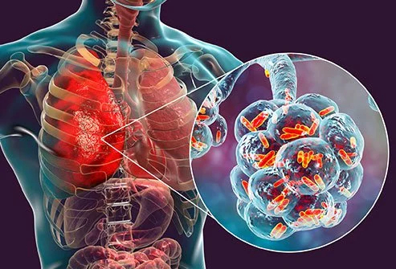

Pneumonia

CAUSES
Pneumonia happens when germs get into your lungs and cause an infection. The immune system’s reaction to clear the infection results in inflammation of the lung’s air sacs (alveoli). This inflammation can eventually cause the air sacs to fill up with pus and liquids, causing pneumonia symptoms.
Several types of infectious agents can cause pneumonia, including bacteria, viruses, and fungi.
SYMPTOMS
Pneumonia symptoms can be mild to life threatening. They can include:
- coughing that may produce phlegm (mucus)
-
fever
-
sweating or chills
-
shortness of breath that happens while doing normal activities, or even while resting
-
chest pain that’s worse when you breathe or cough
-
feelings of tiredness or fatigue
-
loss of appetite
-
nausea or vomiting
-
headaches
DIAGNOSIS
Depending on the severity of your symptoms and your risk of complications, your doctor may also order one or more of these tests:
- Chest X-ray
An X-ray helps your doctor look for signs of inflammation in your chest. If inflammation is present, the X-ray can also inform your doctor about its location and extent. -
Blood culture
This test uses a blood sample to confirm an infection. Culturing can also help identify what may be causing your condition. -
Sputum culture
During a sputum culture, a sample of mucus is collected after you’ve coughed deeply. It’s then sent to a lab to be analyzed to identify the cause of the infection. -
Pulse oximetry
A pulse oximetry measures the amount of oxygen in your blood. A sensor placed on one of your fingers can indicate whether your lungs are moving enough oxygen through your bloodstream. -
CT scan
CT scans provide a clearer and more detailed picture of your lungs. -
Fluid sample
If your doctor suspects there’s fluid in the pleural space of your chest, they may take a fluid sample using a needle placed between your ribs. This test can help identify the cause of your infection.
-
Bronchoscopy
A bronchoscopy looks into the airways in your lungs. It does this using a camera on the end of a flexible tube that’s gently guided down your throat and into your lungs.
TREATMENTS
Your treatment will depend on the type of pneumonia you have, how severe it is, and your general health.